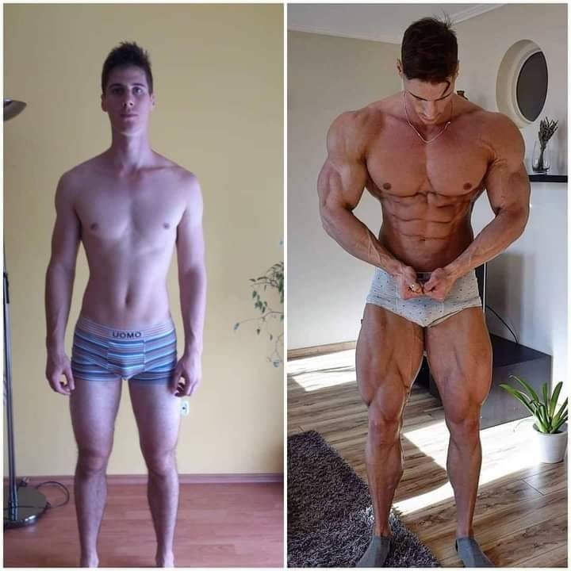

Rutina de entrenamiento en casa
(Días de entrenamiento: 3-4 días a la semana)
Día 1: Rutina de torso en casa:
-Flexiones (pecho): 4 series x 12-15 repeticiones.
-Fondos en sillas (tríceps): 3 series x 15 repeticiones.
-Dominadas (espalda): 4 series x máximo de repeticiones (si no puedes hacer dominadas, puedes hacer remo en lugar de ello).
-Planchas laterales (core): 3 series x 30 segundos cada lado.
Día 2: Rutina de piernas en casa:
-Sentadillas (cuádriceps y glúteos): 4 series x 12-15 repeticiones.
-Zancadas (isquiotibiales y glúteos): 3 series x 12 repeticiones cada pierna.
-Elevación de talones (gemelos): 3 series x 15-20 repeticiones.
-Planchas (core): 3 series x 45 segundos.
Día 3: Rutina de cuerpo completo en casa:
-Burpees: 3 series x 10 repeticiones.
-Flexiones: 3 series x 12-15 repeticiones.
-Sentadillas: 3 series x 15 repeticiones.
-Dominadas o remo: 3 series x máximo de repeticiones.
Día 4 (opcional): Rutina de recuperación y flexibilidad:
-Yoga o estiramientos: 30-45 minutos.
-Caminata ligera o actividad cardiovascular de baja intensidad: 20-30 minutos.
Consejos adicionales:
-Nutrición: Dada la tendencia de los ectomorfos a tener un metabolismo rápido, es crucial aumentar la frecuencia de comidas y consumir un excedente calórico
-Hidratacion: Bebe suficiente agua a lo largo del día para mantenerte hidratado.
-Descanso: Asegúrate de dormir lo suficiente cada noche para permitir que tu cuerpo se recupere y repare.
-Variación: Incrementa gradualmente la intensidad de tu entrenamiento.
Estos ejercicios son para realizarse sin ningun aparato deportivo ni ninguna instalacion, pero si usted tiene acceso a un gimansio o a aparatos deportivos, puede llevar su rutina a otro nivel:
-Rutina en GimnasioDieta para Ectomorfos
(Dieta de 4 dias)
Día 1:
Desayuno:
-4 claras de huevo revueltas con espinacas.
-1 taza de avena cocida con rodajas de plátano y una cucharada de almendras.
Almuerzo:
-Pechuga de pollo a la parrilla.
-Quinoa cocida.
-Brócoli al vapor.
Merienda:
-Batido de proteínas con leche y plátano.
Cena:
-Salmón al horno.
-Batata asada.
-Ensalada de hojas verdes con aderezo de aceite de oliva.
Día 2:
Desayuno:
-Tortilla de 2 huevos con espinacas y tomate.
-1 taza de avena con bayas y nueces.
Almuerzo:
-Filete de ternera a la parrilla.
-Quinoa cocida.
-Espárragos al vapor.
Merienda:
-Yogur griego con miel y almendras.
Cena:
-Pechuga de pollo al horno.
-Arroz integral.
-Ensalada de pepino y tomate.
Día 3:
Desayuno:
-Batido de proteínas con leche y plátano.
-1 taza de avena cocida con fresas y nueces.
Almuerzo:
-Ensalada de garbanzos con espinacas, tomate y aguacate.
-Pechuga de pollo a la parrilla.
Merienda:
-Batata asada.
Cena:
-Salmón al horno.
-Quinoa cocida.
-Brócoli al vapor.
Día 4:
Desayuno:
-4 claras de huevo revueltas con espinacas.
-1 taza de avena cocida con rodajas de plátano y una cucharada de almendras.
Almuerzo:
-Pechuga de pollo a la parrilla.
-Quinoa cocida.
-Espárragos al vapor.
Merienda:
-Batido de proteínas con leche y plátano.
Cena:
-Salmón al horno.
-Batata asada.
-Ensalada de hojas verdes con aderezo de aceite de oliva.
Consejos adicionales:
-Asegúrate de consumir más calorías de las que quemas para crear un excedente calórico.
-Bebe suficiente agua a lo largo del día para mantenerte hidratado.
-Los carbohidratos son una fuente clave de energía. Incluye opciones de carbohidratos complejos como avena, arroz integral,...
-Divide tu consumo calórico en comidas más frecuentes a lo largo del día.